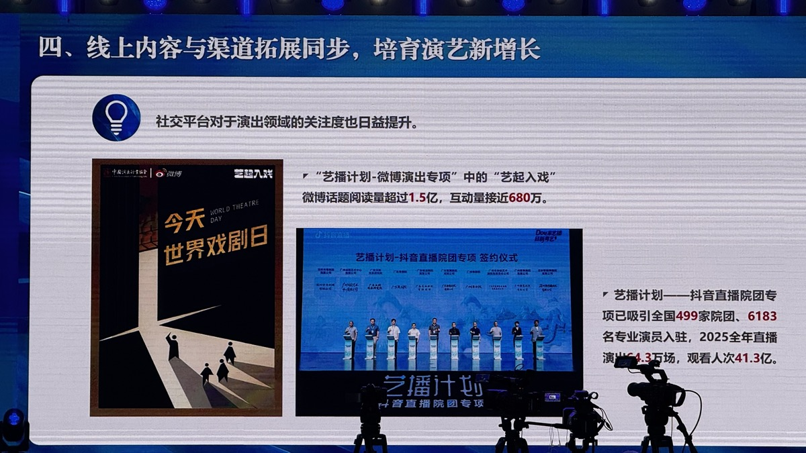
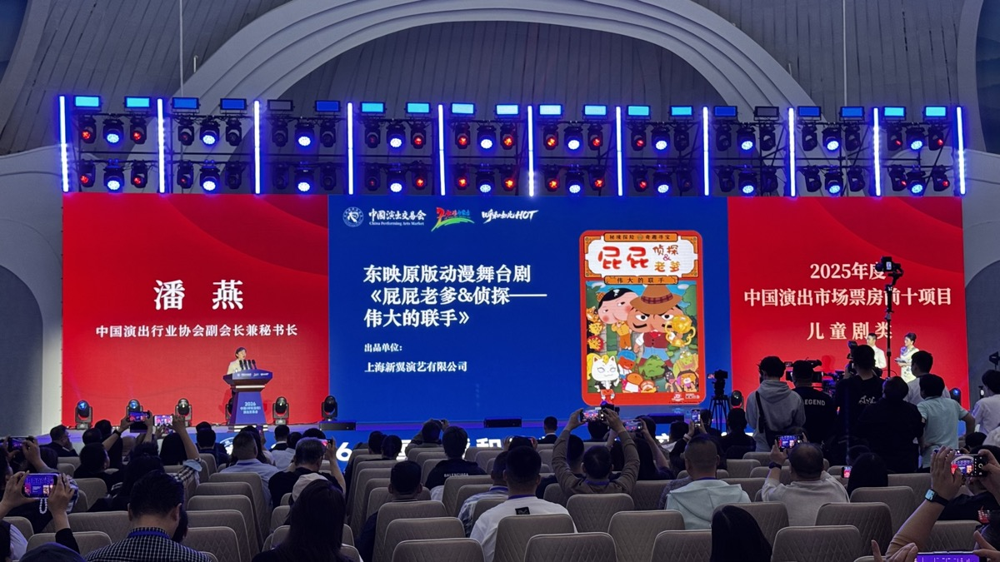
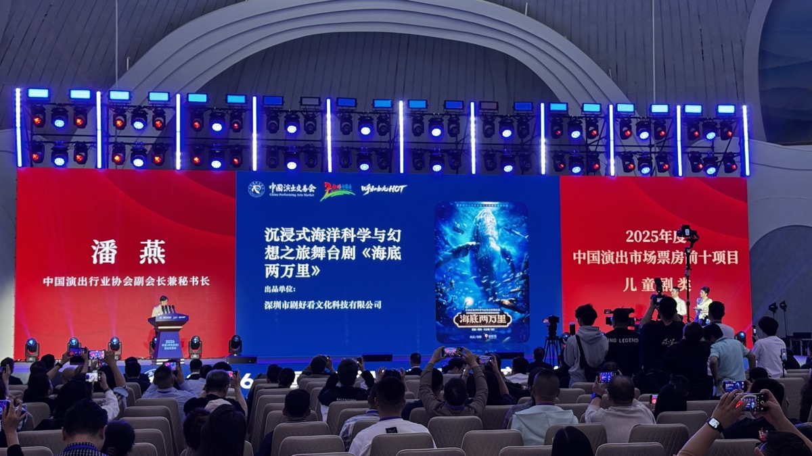
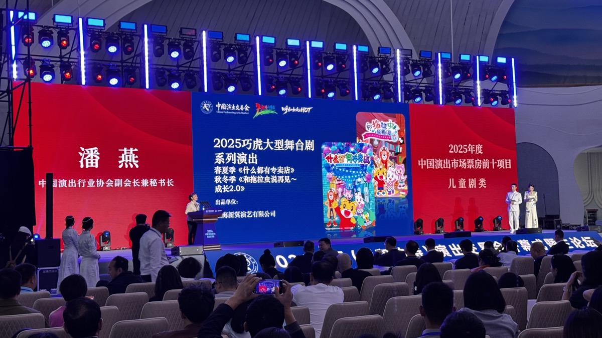
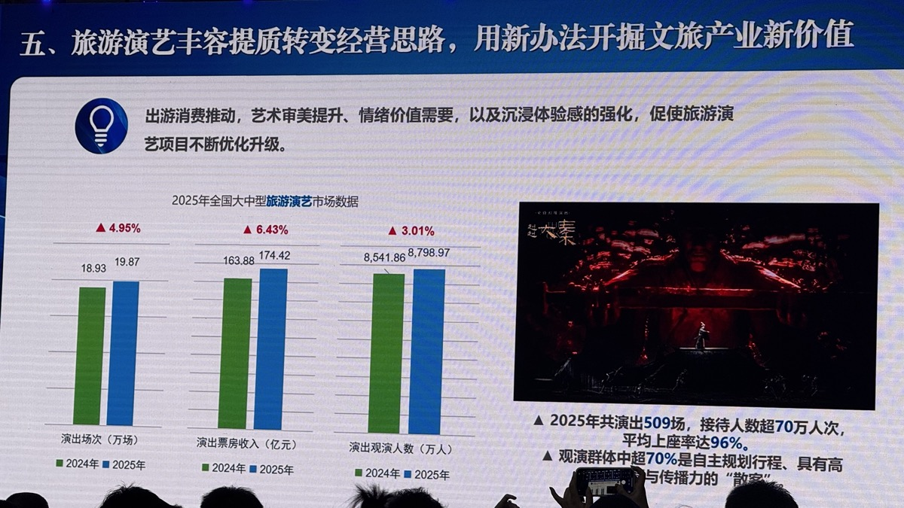
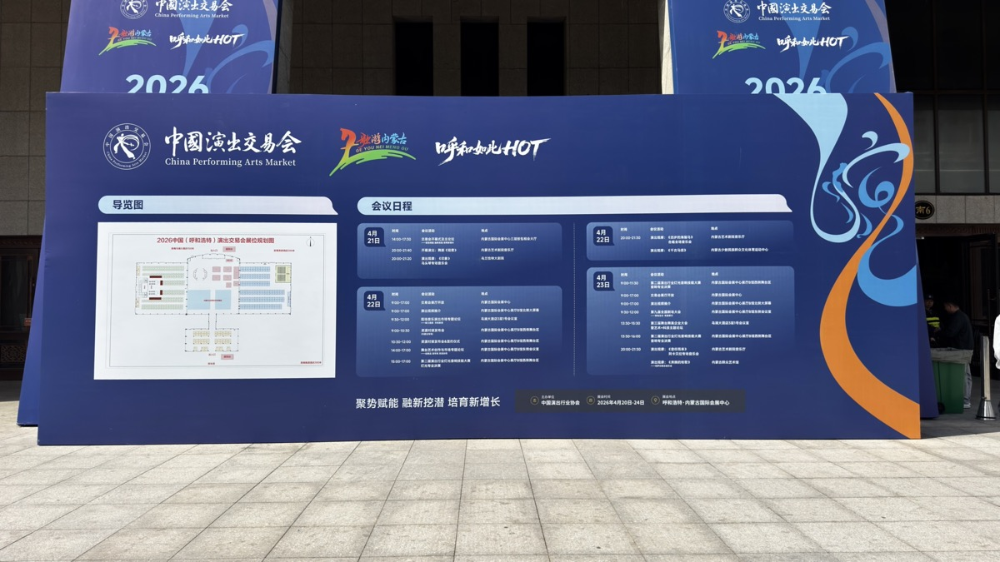
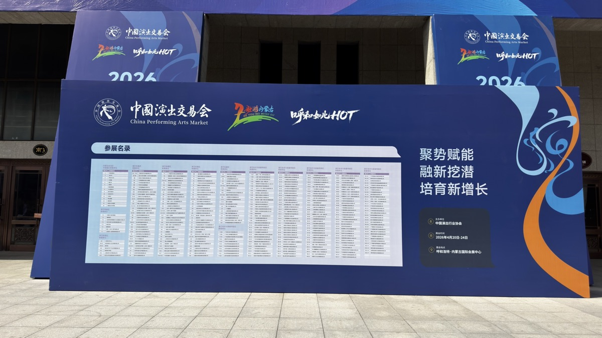
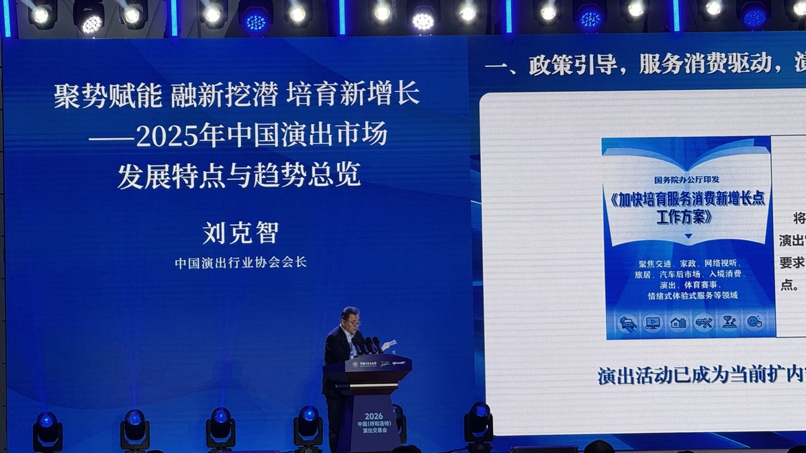
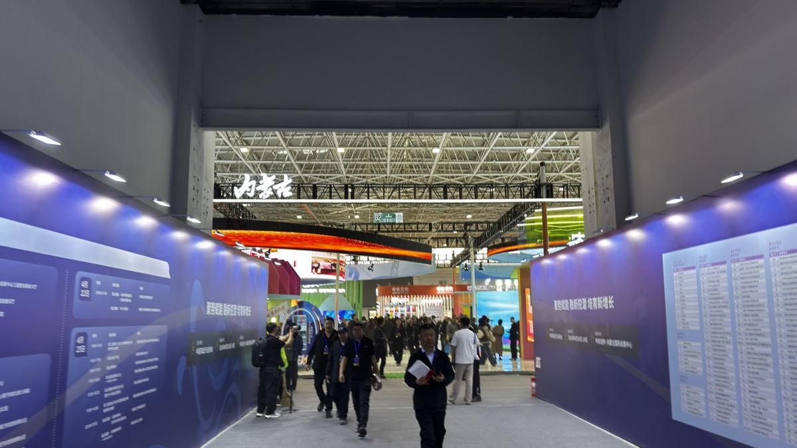

第一天走完 30 个展位，
采购方反复问的不是「有没有 IP」，
而是这 3 件事
背板还在上墙，洽谈区的桌椅刚摆好，通道里已经有人拿着资料在找人、对点。今天是 2026 中国演出交易会 D1。展厅还没正式开放，很多事情也还没真正开始——但站在现场，会有一种很明确的感觉：后台已经开机了。

今天展区最明显的状态，其实就是"还在准备"。很多展位还在布展，背板一块块立起来，物料刚从箱子里拿出来。
但人已经先动起来了。通道里最常见的画面不是围观，而是找人——有人拿着资料站着聊，有人一边走一边认展位，有人刚打完招呼就开始交换联系方式。
很多时候最先开始的，不是"谈合作"，而是先把人找到，把名字和项目对上，把那句"之后再细聊"先说出来。
今天的展区，不是热闹，是启动。

下午的开幕式和主论坛在会展中心三层举行。走进去第一感觉是：主会场已经完全进入状态了。蓝色主视觉很完整，大屏亮着，穹顶灯阵也都打开了。
中国演出行业协会会长刘克智在主旨发言中把当前市场概括为四句话：
「内容为王、文旅共生、体验至上、数字赋能」
——其中"文旅共生"与"体验至上"，对做沉浸式内容的团队来说是更熟悉的语言。

虽然展厅还没正式开放，但有些项目的视觉已经先立起来了。一面背板、一张主视觉、一段介绍，平时看可能只是宣传物料；到了这种现场，它们会变得很具体。
因为人在还没坐下来之前，第一眼看到的就是这些。有的项目还没正式开始讲，但它的气质已经先出来了。有些墙一立起来，你大概就知道它想怎么被看见。

今天行业发布环节，主论坛现场公布了 2025年全国演出市场五个品类的票房 TOP10——儿童剧、音乐剧、话剧、舞蹈舞剧、沉浸式演出。
「沉浸式演出」第一次作为一个独立品类，与儿童剧、音乐剧等并置在协会的年度发布里——对长期在这条赛道做内容的团队来说，不是一个小的行业信号。
大屏上的片刻，很快会被翻译成后续宣发里的一句"背书型标签"。对一部已经上演多年的剧目来说，这种年度级别的点名，比现场发物料更直接。



主论坛五场演讲中，中国信息通信研究院的《智启新章：人工智能赋能演出行业业态重塑与场景创新路径建议》是唯一直接命题「人工智能」的场次。
在演交会现场听到它，感觉还是不太一样。这个东西，开始被放进怎么做项目、怎么跑市场、怎么提高效率这些更具体的问题里了。
这种"还没完全想明白，但已经不能不谈"的状态，反而很真实。行业开始承认，这个问题迟早会变成所有人都要面对的一个具体问题。

如果要给 D1 找一个词，大概还是会写：后台已经开机。
今天没有什么特别戏剧性的事发生。展厅还在搭，流程在往前走，人和人开始慢慢对上，很多事情都只是刚刚开始。
但很多真正会发生的东西，都是从这种不太起眼的时刻慢慢长出来的。